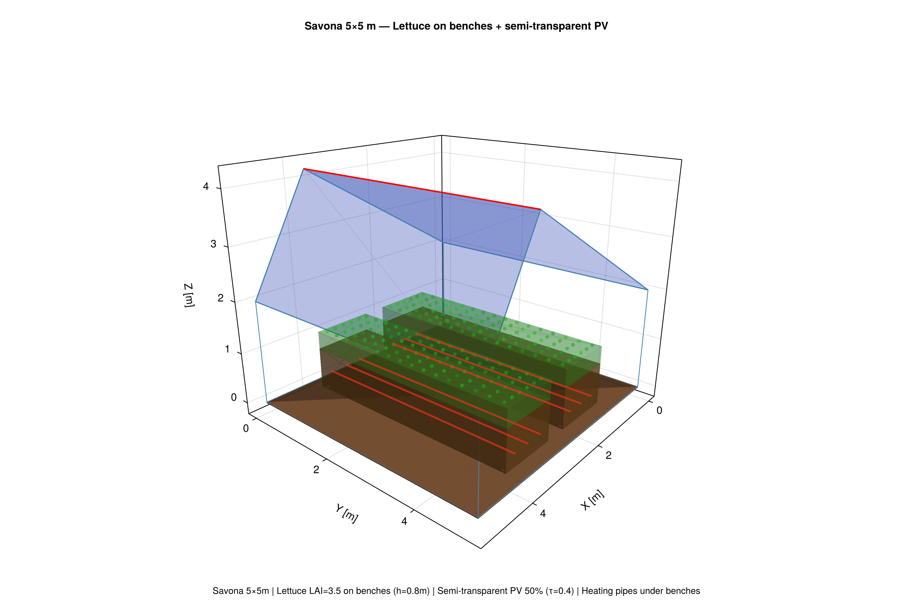
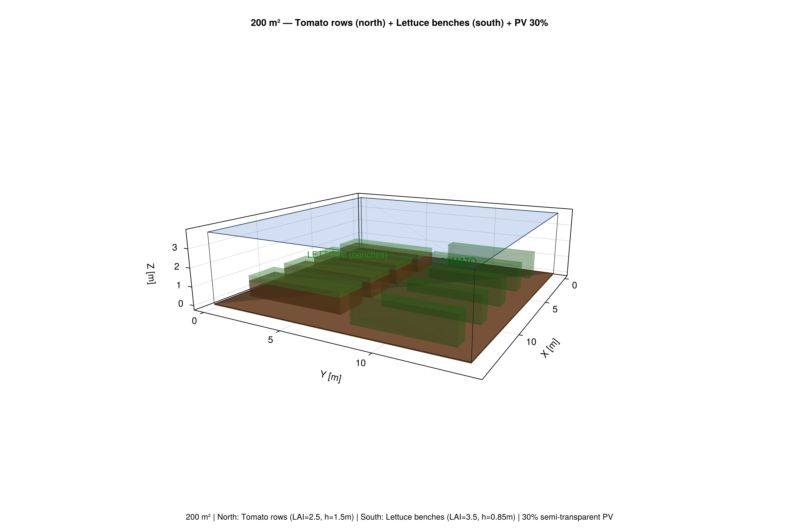

Tutorial: Crop Spatial Layout & 3D Visualization
GreenhousesJL models crops as 3D zones (parallelepipeds) positioned inside the greenhouse. This enables spatial analysis of light interception, mixed cropping, and bench-level soilless culture.
Crop zones
A CropZone is a rectangular block defined by its position, size, and canopy properties:
using GreenhousesJL
zone = CropZone(
name = "tomato_row_1",
x0 = 1.0, y0 = 0.5, z0 = 0.0, # origin (z0=0 for ground culture)
dx = 0.8, dy = 4.0, dz = 1.2, # footprint + canopy height
LAI = 2.5,
crop_name = "tomato",
)For soilless culture on benches, z0 is the bench height:
zone = CropZone(
name = "lettuce_bench",
x0 = 1.0, y0 = 0.3, z0 = 0.8, # z0 = bench top height
dx = 1.2, dy = 4.4, dz = 0.35, # plant height above bench
LAI = 3.5,
crop_name = "lettuce",
)Layout presets
Row layout (ground culture)
tmy = load_tmy("path/to/weather.txt")
p = SavonaParams(tmy; with_walls=true)
zones = row_layout(p;
n_rows = 3,
row_width = 0.6,
plant_height = 1.2,
LAI = 2.5,
crop_name = "tomato",
)Bench layout (soilless / hydroponic)
zones = bench_layout(p;
n_benches = 2,
bench_width = 1.2,
bench_height = 0.8, # table height
plant_height = 0.35, # canopy above bench
LAI = 3.5,
crop_name = "lettuce",
)This generates both the bench structure (brown, LAI=0) and the crop zone on top (green).
Block layout (mixed crops)
blocks = [
(name="tomato_N", x_frac=(0.0, 0.45), y_frac=(0.1, 0.9), LAI=2.5, crop="tomato", height=1.2),
(name="lettuce_S", x_frac=(0.55, 1.0), y_frac=(0.1, 0.9), LAI=3.5, crop="lettuce", height=0.3),
]
zones = block_layout(p; blocks=blocks)Light interception per zone
Each zone computes Beer-Lambert PAR interception accounting for PV panels:
PAR_int, PAR_floor = zone_light_interception(zone, 300.0, OpaquePanel(coverage=0.5))Full layout analysis:
print_layout_summary(zones, 300.0, NoPanel(); T_air=22.0)Example output: Tomato rows + 50% opaque PV
| Zone | Crop | Area | LAI | PAR | f_T | f_light | Productivity |
|---|---|---|---|---|---|---|---|
| row_1 | tomato | 2.4 m² | 2.5 | 55 W/m² | 0.97 | 0.50 | 49% |
| row_2 | tomato | 2.4 m² | 2.5 | 55 W/m² | 0.97 | 0.50 | 49% |
| row_3 | tomato | 2.4 m² | 2.5 | 55 W/m² | 0.97 | 0.50 | 49% |
The 50% opaque PV panels cut productivity in half by blocking light.
Comparison: PV impact on different layouts
| Configuration | PAR (W/m²) | Productivity |
|---|---|---|
| No PV | 110 | 97% |
| 30% semi-transparent (τ=0.4) | 87 | 76% |
| 50% opaque | 55 | 49% |
| 50% semi-transparent (τ=0.4) | 77 | 68% |
3D visualization
PNG export (CairoMakie)

Savona 5×5m: Lettuce (green) on benches (brown) with heating pipes (red) under benches. Roof: semi-transparent PV panels (blue).

200 m²: Tomato rows (north, dark green, h=1.5m) + Lettuce benches (south, light green on brown tables). Roof: 30% semi-transparent PV.
OBJ export (for Blender / MeshLab)
export_layout_obj("greenhouse.obj", p, zones)This generates:
greenhouse.obj, 3D mesh with greenhouse structure + crop zonesgreenhouse.mtl, materials with semi-transparent colors
| Material | Color | Transparency |
|---|---|---|
| Crop canopy | Green (0.2, 0.7, 0.2) | 65% transparent |
| Bench | Brown (0.55, 0.35, 0.15) | 40% transparent |
| Glass | Blue (0.7, 0.85, 0.95) | 70% transparent |
| PV panels | Dark blue (0.15, 0.15, 0.35) | 30% transparent |
| Floor | Brown (0.55, 0.4, 0.25) | Opaque |
Open with:
meshlab greenhouse.obj
# or
blender --python-expr "import bpy; bpy.ops.import_scene.obj(filepath='greenhouse.obj')"Combining with simulation
# Define layout
zones = bench_layout(p; n_benches=3, bench_height=0.8, crop_name="lettuce")
# Run thermal simulation (uses aggregate LAI)
p = GreenhouseParams(tmy; A=200.0,
heating = HeatingConfig(AirSourceHP(), UnderBenchPipes()),
crop = LettuceCrop(),
)
sol = solve(ODEProblem(greenhouse_rhs!, initial_state(p), (0.0, 7*86400.0), p),
Tsit5(); reltol=1e-6, saveat=3600.0, maxiters=1_000_000)
# Analyze spatial light distribution
T_air = mean(sol[2,:]) - 273.15
print_layout_summary(zones, 300.0, p.panel; T_air=T_air)
# Export 3D
export_layout_obj("my_greenhouse.obj", p, zones)